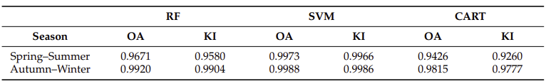
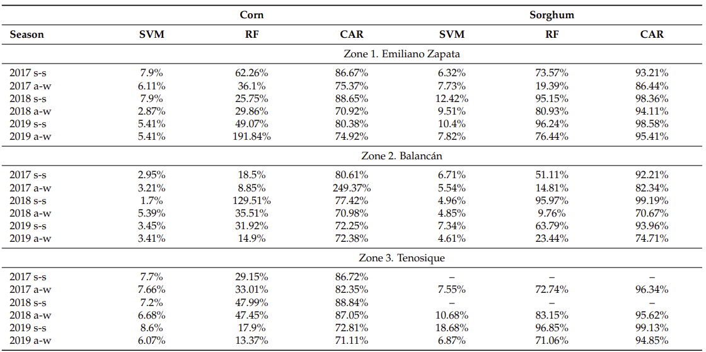

6.1 summary
During the lecture, we were introduced to classification using remotely-sensed data, exploring various approaches to applying classification and different methods for analysis using machine learning tools like CART and Random Forest. We also reviewed several papers previously examined in the course, discussing the methodologies employed in these studies. Following that, we delved into applying these methods to our own research studies.
6.1.0.1 CART
Classification and Regression Tree is a binary tree based predictive model that performs decisions based on logical if-else scenarios. It recursively splits training data into groups based on splitting criteria (gini index or RMSE) until reaching leaf nodes (nods represent decision function) that achieve the highest possible level of accuracy.

6.1.0.2 Random Forest
An ensemble classifier that generates multiple CART trees and by uses voting mechanism it concludes predictions. Random Forest is an extension of bagging approach whereby it uses both bagging and random subset selection of features to create uncorrelated set of trees reducing overfitting overall. The number of trees is a hyperparameter that can be tweaked in addition to other parameters like the number of random variables are used for building each tree.

6.1.0.3 Support Vector Machine(SVM)
A supervised learning algorithm that is utilised for regression and classification problems. SVM finds the most ideal hyperplane during training to separate classes with as few misclassified datapoints as possible. It selects support vectors based on extreme points that aid in hyperplane creation using parameters like cost parameter C, Gamma, and kernel functions to maximise margin between classes. Hyperparameter tuning is crucial in finding the most optimal values of C and Gamma parameters which significantly influence support vector selection and SVM performance. Linear kernel is the default option for most use cases, however, SVM uses the kernel trick to apply nonlinear kernel whenever is needed.

6.2 Application
Machine learning is extensively employed across various domains including finance, trading technologies, healthcare, and traffic prediction. Exploring its application, particularly in image classification within remote sensing analysis using satellite images, is of great interest for me. Specifically focusing on urban environments, this section compares two studies: “Analysis of Land Use and Land Cover Using Machine Learning Algorithms on Google Earth Engine for Munneru River Basin, India” (Loukika, Keesara, and Sridhar 2021)and “Mapping of Land Cover with Optical Images, Supervised Algorithms, and Google Earth Engine”. (Pech-May et al. 2022) Both studies evaluate CART, Random Forest, and SVM algorithms for detecting land use and land cover (LULC) patterns.
Analysis of Land Use and Land Cover Using Machine Learning Algorithms on Google Earth Engine for Munneru River Basin, India:
This study aims to utilize machine learning algorithms on Google Earth Engine to classify land use and land cover (LULC) in the Munneru River Basin, India, comparing support vector machine (SVM), random forest (RF), and classification and regression trees (CART). Leveraging Earth observation data from Landsat-8 and Sentinel-2 satellite images, the analysis meticulously considers spatial resolutions and cloud cover criteria. Spectral bands from these satellites are used to classify LULC into five primary classes: water bodies, forests, barren lands, vegetation, and built-up areas. Orthorectified images with minimal cloud cover are processed using cloud mask algorithms, and yearly means of NDVI and NDWI indices are calculated to support classification. RF, CART, and SVM are then applied for comprehensive LULC analysis of the study area.
6.2.0.1 Method
Orthorectified images with minimal cloud cover served as the primary input for classification. Cloud shadow and cover were removed using a cloud mask technique, followed by eliminating contaminated pixels. Yearly means of normalized difference vegetation index (NDVI) and normalized difference water index (NDWI) were computed. Landsat and Sentinel data were merged into composite images using the median filter. Training polygons were generated from high-resolution Google Earth images, evenly distributed across five land use classes. These polygons were loaded into Google Earth Engine (GEE) as a feature collection table. Machine learning algorithms such as Random Forest (RF), Classification and Regression Trees (CART), and Support Vector Machine (SVM) were trained using Landsat-8 and Sentinel-2 images to classify land use and land cover (LULC).

6.2.0.2 Discussion
SVM, CART, and RF were employed to classify LULC using Landsat-8 and Sentinel-2 images on the GEE platform. Temporal aggregation methods were utilized to address gaps in cloudy images. NDWI and NDVI were utilized as additional inputs for LULC classification, representing water bodies and vegetation characteristics. A total of 575 training sites were utilized, with each class receiving 80-95 training samples and 65-80 validation samples. The best cross-validation factor for CART was determined to be 5 or 10. RF classification showed higher accuracy with a number of trees ranging from 50 to 100, with 100 trees yielding satisfactory results in this study. Important parameters such as kernel type, gamma value, and cost were considered in SVM classification. CART had a tendency to misclassify vegetation as built-up, water bodies, or forest in 2016 and 2018, and as barren land or water bodies in 202012. SVM slightly misclassified vegetation as forest, built-up, or water bodies in 2016 and as built-up or forest in 2018. However, SVM performed well in 2020, except for some forest and built-up areas. RF outperformed the other two classifiers in all three years.

In terms of accuracy, RF outperformed SVM and CART for both Landsat-8 and Sentinel-2 images7. The overall accuracy for Landsat-8 was 94.85% for RF, 90.88% for SVM, and 82.88% for CART. For Sentinel-2, the overall accuracy was 95.84% for RF, 93.65% for SVM, and 86.48% for CART. The kappa coefficients, which measure the agreement between predicted and observed categorizations, were also highest for RF.
Mapping of Land Cover with Optical Images, Supervised Algorithms, and Google Earth Engine:
The objective of this study is to evaluate the effectiveness of optical satellite images for land and land-cover mapping. The study area, situated in the eastern region of Tabasco, Mexico, covers towns like Balancán, Emiliano Zapata, and Tenosique. Characterized by abundant aquifers and sediment accumulation from streams, rivers, and lagoons, the area experiences a hot-humid climate. Utilizing Sentinel-2 satellite imagery via Google Earth Engine, the study established two annual time series spanning 2017 to 2019, aligning with crop cycles and regional weather patterns. The methodology involved mapping crops and land use using spectral indices and machine learning algorithms (SVM, RF, CART). Detailed tables depict land-use coverage across three zones for various seasons, showcasing changes in cropland, shrubland, water bodies, and more. Comparative analysis of classification errors for corn and sorghum crops using SVM, RF, and CART was conducted.
6.2.0.3 Method
In the image selection phase, cloud masking using the QA60 band was employed to remove pixels with small accumulations of dense and cirrus clouds. A combination of reflectance thresholds and morphological operations was utilized to identify thick clouds and cirrus clouds, respectively. Then preprocessing phase involved calculating spectral indices for masked images, including NDVI, GNDVI, EVI, SAVI, and NDMI for vegetation detection, and NDWI for water bodies. Image correction techniques such as mosaicking and histogram reduction were applied to create mosaics of the study area, allowing for data aggregation over time. And the Supervised classification phase involved identifying main land types through visual analysis and applying RF, SVM, and CART algorithms to classify crops and soil types. Separate datasets were created for different crop cycles, and the dataset was divided into 70% for training and 30% for evaluation to avoid overtraining. SVM, RF, and CART algorithms were evaluated with different configurations to enhance classification efficiency.

6.2.0.4 Discussion
The SVM, RF, and CART classification algorithms were evaluated using different configurations on the Google Earth Engine (GEE) platform to enhance classification efficiency. For SVM, a kernel with a radial and gamma base function of 0.7 was employed, along with a cost of 30. Training occurred during both spring–summer and autumn–winter seasons. RF was configured to limit random forest trees to 20, minimizing misclassifications. The base GEE configuration was used for CART due to its lower classification error rate.
Two primary categories were defined: (1) crop types (including corn and sorghum) and (2) land use types (such as water bodies, urban areas, and tropical rainforest). The study assessed the accuracy of these classifications using overall training accuracy (OA) and the kappa index (KI). SVM performed exceptionally well, achieving an OA and KI of 0.996% in both seasons. RF also showed strong performance, with an OA and KI greater than 0.990 in spring–summer and 0.96% and 0.95% in autumn–winter. CART achieved an OA of 0.94% and a KI of 0.92% in the first season and 0.98% and 0.97% in the second season.

Consider the limitations of data sources. The SIAP collects crop data based on planted hectares, ignoring crops that do not sprout or grow. Consequently, the margins of error between the algorithm-detected hectares and SIAP data are substantial. While SVM outperformed actual data, there may still be errors due to occasional cultivation of small or intermittent crop lands.

6.2.0.5 Conclusion
Both studies outlined the classification methodology for land cover and land use (LULC), the first study methodology focused more on the preprocessing, feature selection, the preparation of training datasets, and the classifier performance evaluation. This study goes into the details of the classification process, including the selection of input data, cloud masking techniques, the methods of temporal aggregation, and spectral index calculation. Furthermore, This study conduct a comparison between the results of CART, RF, SVM and conclude that RF classifier is better than the other two. For this study the accuracy assessment is applied using OA. The second study discusses image selection, pre-processing, and supervised classification phases, then it goes into details about cloud masking and spectral index calculation, image correction, and classifier estimation. OA and KI metrics are used for the accuracy assessment. While both of studies go into details of the analysis but I found that the first one is more comprehensive about the classification process and performance evaluation.
6.3 Reflection
During my journey of learning about ML applications in remote sensing, at first I found the concept quite hard. However, when I started to explore the research paper topic more, things started to become clearer. I wad intrigued to see how the concepts that we have been covering these last few weeks like image correction and spectral index, will be used and combined with ML in real-life analysis. For example, l learned more about the CART method of dividing data into group, which although is simple but it has its limited by high-dimensional data. On the other hand, because of RF approach, which is based on combining multiple CART trees, RF is has the ability to improve accuracy while reducing overfitting. SVM can create an optimal hyperplane for class separation with a very minimal amount of misclassification, particularly in the dataset that has many dimensions. Finally, to choose which method is more suitable for any analysis really depends on several factors, like the nature of the dataset, desired interpretability, etc…..
6.4 Reference
Analysis of Land Use and Land Cover Using Machine Learning Algorithms on Google Earth Engine for Munneru River Basin, India (Loukika K, Keesara V 2021).
Mapping of Land Cover with Optical Images, Supervised Algorithms, and Google Earth Engine (Pech-May F, Aquino-Santos R 2022).